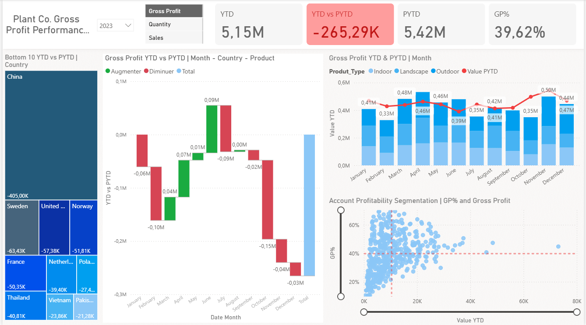

POWER BI
Projet : Analyse de performance commerciale annuelle (Power BI – Dataset sur les ventes mondiales)
Objectif du projet :
Ce rapport vise à analyser la performance commerciale annuelle à travers les indicateurs clés de ventes, de profitabilité et d’évolution par rapport à l’année précédente (YTD vs PYTD). Il permet d’identifier les tendances globales, les pays les plus performants ou les moins performants, et d’explorer la rentabilité par type de produit et segment client.

-
Analyse par pays:
- Visualisation des “Bottom 10” pays en termes de variation de performance (YTD vs PYTD):
- Les pays comme Chine, Suède, Norvège, France, Thaïlande enregistrent les plus fortes baisses.
- Les écarts sont exprimés en €, ce qui facilite la hiérarchisation des pertes.
- Capacité à identifier les zones géographiques sous-performantes
- Analyse orientée diagnostic et priorisation des actions commerciales
-
Analyse temporelle:
- Graphiques comparant le Gross Profit YTD vs PYTD par mois.
- Visualisation claire des hausses et baisses mensuelles :
- Mois en forte performance : Mars, Avril, Juin, Août
- Mois en recul : Février, Octobre, Novembre
- Analyse de saisonnalité et tendances
- Utilisation de séries temporelles dans Power BI
- Segmentation selon les catégories : Indoor, Landscape, Outdoor
- Comparaison YTD vs PYTD de la valeur générée par type de produit
- Visualisation claire des hausses et baisses mensuelles :
- Mois en forte performance : Mars, Avril, Juin, Août
- Mois en recul : Février, Octobre, Novembre
- Utilisation d’une segmentation pertinente (produit)
- Mise en évidence de la diversification de l’offre
Domaine Compétences Data modeling Construction d’un modèle de données Power BI cohérent (YTD, PYTD, mesures DAX) Dax & Mesures Calculs de YTD, PYTD, écarts, ratios (GP%) Visualisation Graphiques comparatifs, barres empilées, scatter plots Storytelling Data Mise en avant claire de la performance et des leviers d’amélioration